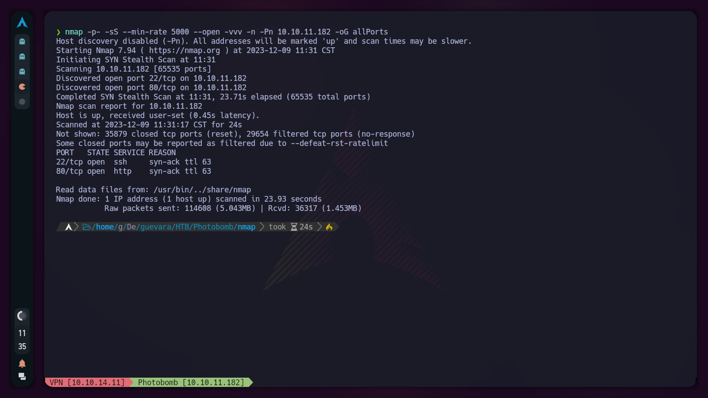

Photobomb: Hack The Box Write-up
This is my detailed write-up for the Photobomb machine on Hack The Box. In this document, I will describe the steps and methods I used to gain access and eventually escalate privileges on the machine.
Introduction
Photobomb is a beginner-level Linux machine designed to provide a hands-on experience in cybersecurity. In this setup, users will have the opportunity to apply their skills in identifying and exploiting common vulnerabilities. The machine focuses on authentication and credential handling, as well as examining specific functionalities of web applications. Additionally, participants will explore privilege escalation techniques through system scripting configurations and usage. This machine offers a realistic and safe environment for those interested in learning more about cybersecurity and penetration testing.
Recon
We start by performing a scan of all open TCP ports on the machine with the following command: nmap -p- -sS --min-rate 5000 --open -vvv -n -Pn 10.10.11.182 -oG allPorts
Explotación
Explica cómo lograste acceder a la máquina. Incluye detalles de vulnerabilidades y exploits usados.
Escalada de Privilegios
Describe los métodos que usaste para elevar tus privilegios en la máquina.
Conclusión
Tus pensamientos finales, lo que aprendiste de esta máquina, y cualquier otra observación relevante.